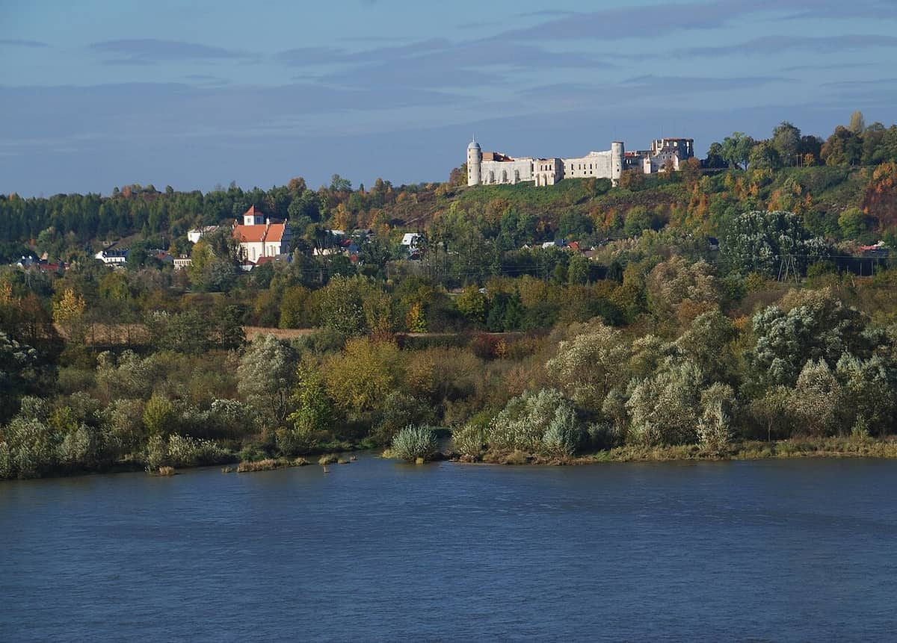

8,3 km · ok. 13 min autem
Kazimierz Dolny - rynek i Wisła
Renesansowe kamienice, rynek ze studnią, Góra Trzech Krzyży i bulwar nad Wisłą. Najbliższe miasteczko z restauracjami i sklepami.
Kazimierz Dolny, lessowe wąwozy, zamek nad Wisłą i uzdrowisko w Nałęczowie - wszystko w zasięgu pół godziny autem. Przy każdym miejscu podajemy odległość od winnicy po drodze.
Do rynku w Kazimierzu Dolnym jest 8,3 km, czyli ok. 13 minut autem. Wąwóz Korzeniowy Dół jest jeszcze bliżej - 10 minut.
Renesansowe kamienice, rynek ze studnią, Góra Trzech Krzyży i bulwar nad Wisłą. Najbliższe miasteczko z restauracjami i sklepami.

Lessowy wąwóz z odsłoniętymi korzeniami drzew na ścianach - jeden z najbardziej znanych spacerów w okolicy Kazimierza.

Ruiny zamku na wzgórzu po drugiej stronie Wisły, z widokiem na dolinę rzeki. Drogą przez most w Puławach.
Zabytkowy park pałacowy ze Świątynią Sybilli i Domem Gotyckim - na spacer w drodze do Puław.
Uzdrowisko z parkiem, pijalnią wód i palmiarnią - pomysł na pół dnia.
Rzeczyca 112 - ok. 7 km na wschód od Kazimierza Dolnego, wśród lasów i łąk.
Odległości i czas dojazdu policzone po drogach (OpenStreetMap, OSRM). Zdjęcia: Wikimedia Commons, licencje Creative Commons - autor i licencja przy każdym zdjęciu.